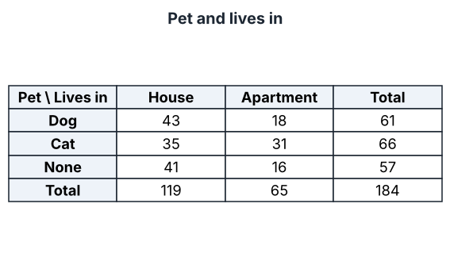
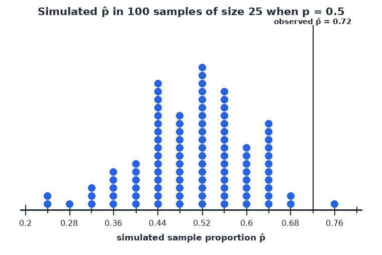
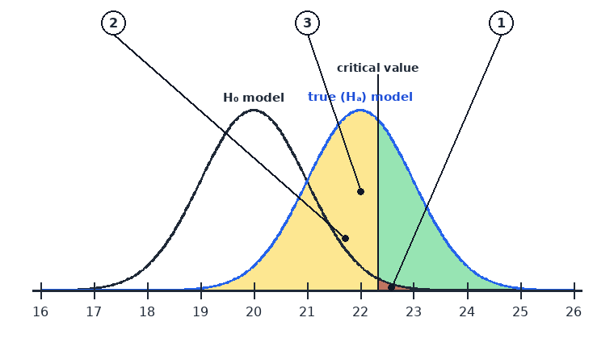

Section I · Multiple choice · 90 minutes
- Stemplot row 3 | 1 4 7 (key 3 | 1 = 31). What is the sum of these values?(A)102(B)312(C)34(D)15Answer: (A) 102
- Read each leaf with its stem, as the key shows (for example, 3 | 1 means 31).
- 31 + 34 + 37 = 102.
- In a right-skewed data set with one high outlier, the outlier is corrected to a smaller value that is still the maximum. Which statement is true?(A)The mean and standard deviation decrease, while the median and IQR do not change.(B)The mean decreases but the standard deviation increases.(C)Only the median changes.(D)All four statistics decrease.Answer: (A) The mean and standard deviation decrease, while the median and IQR do not change.
- The median and IQR depend only on the middle of the ordered data, which did not change.
- The mean and SD use every value, so lowering the maximum decreases both.
- Pulse rates (beats per minute) of 14 students: 58, 62, 64, 66, 68, 70, 71, 73, 75, 76, 80, 84, 88, 102. Find the interquartile range (IQR). Use the medians of the lower and upper halves as the quartiles.(A)8.00(B)6.00(C)44.00(D)14.00Answer: (D) 14.00
- IQR = Q3 − Q1, with Q1 and Q3 the medians of the lower and upper halves.
- Q1 = 66 and Q3 = 80, so IQR = Q3 − Q1 = 14 = 14.00.
- Use the box plot of minutes of homework. About what percent of the values are at least 64?
 (A)100%(B)25%(C)75%(D)50%Answer: (C) 75%
(A)100%(B)25%(C)75%(D)50%Answer: (C) 75%- Each of the four parts of a box plot (whisker, box half, box half, whisker) holds about 25% of the values.
- 64 is Q1, so about 75% of values are at or above it.
- In a race, lower times are better. Ana ran the 100 m in 13.1 s (team mean 13.8 s, SD 0.5 s) and the 400 m in 61.0 s (team mean 64.0 s, SD 2.5 s). In which race was Ana's performance more impressive relative to her team?(A)100 m, because her z-score of −1.4 is farther below the mean(B)400 m, because her z-score of −1.2 is farther below the mean(C)400 m, because she was 3 seconds faster than the mean(D)100 m, because 13.1 is the smaller timeAnswer: (A) 100 m, because her z-score of −1.4 is farther below the mean
- 100 m: z = (13.1 − 13.8)/0.5 = −1.4. 400 m: z = (61 − 64)/2.5 = −1.2.
- Lower is better, so the more negative z (−1.4, the 100 m) is more impressive.
- Use the two-way table. Among the "Apartment" students, what proportion are in the "Cat" row?

(A)0.470(B)0.353(C)0.477(D)0.168Answer: (C) 0.477- Condition on the column: total 65.
- 31/65 = 0.477.
- Distractors use the wrong denominator (row total or grand total).
- Which value is closest to the correlation r for the data in the scatterplot?
 (A)-0.50(B)-0.80(C)0.50(D)0.05Answer: (B) -0.80
(A)-0.50(B)-0.80(C)0.50(D)0.05Answer: (B) -0.80- The direction is negative, so r is negative.
- The points show a moderate linear trend, so |r| is about 0.80. (Computed r = -0.791.)
- An LSRL has slope 2.5 and passes through (10, 40). Predict y at x = 14.(A)35(B)45(C)50(D)64Answer: (C) 50
- Substitute x into the regression line ŷ = a + bx.
- 40 + 2.5(4) = 50.
- A regression of winning percentage on points allowed per game gives ŷ = 182.5 − 1.15x. A team allowed 104 points per game and won 66% of its games. Find the residual. Round to two decimal places.(A)-3.10(B)62.90(C)128.90(D)3.10Answer: (D) 3.10
- ŷ = 182.5 − 1.15(104) = 62.900.
- Residual = y − ŷ = 66 − 62.900 = 3.10.
- The actual value is above the line (underpredicted).
- A cumulative relative frequency graph of KenKen times passes through (60 seconds, 0.70). Which statement is correct?(A)The median time is 60 seconds.(B)About 70% of students finished in 60 seconds or less.(C)70 students finished in exactly 60 seconds.(D)About 70% of students took more than 60 seconds.Answer: (B) About 70% of students finished in 60 seconds or less.
- Cumulative relative frequency at a value gives the proportion of observations at or below that value.
- Based on the shape of the histogram, which statement is most likely true?
 (A)The mean and median are about equal.(B)The distribution has two clear peaks, so a single center is misleading.(C)The mean is greater than the median.(D)The mean is less than the median.Answer: (D) The mean is less than the median.
(A)The mean and median are about equal.(B)The distribution has two clear peaks, so a single center is misleading.(C)The mean is greater than the median.(D)The mean is less than the median.Answer: (D) The mean is less than the median.- The distribution is skewed left.
- The mean is less than the median.
- The mean of 6 values is 15. The value 25 is added. What is the new mean? Round to two decimal places.(A)15(B)19.17(C)20(D)16.43Answer: (D) 16.43
- Linear transformation Y = a + bX: μ_Y = a + bμ_X and σ_Y = |b|σ_X (adding a constant does not change the SD).
- (90 + 25)/7 ≈ 16.43.
- A company surveys a random sample of its online customers about shipping speed. A manager uses the results to describe all of its customers, including those who shop only in its stores. What is wrong?(A)Nothing; online customers are a random sample of all customers.(B)Online surveys always produce voluntary response bias.(C)The sample was too small.(D)The sample came from online customers only; in-store customers were not in the sampled population, so the results may not apply to them.Answer: (D) The sample came from online customers only; in-store customers were not in the sampled population, so the results may not apply to them.
- Conclusions should be limited to the population actually sampled.
- Which property is true of a simple random sample but NOT of a systematic random sample of the same size?(A)Every individual has the same chance of being selected.(B)It requires a list of the population.(C)Every possible group of n individuals has the same chance to be the sample.(D)It uses a random number generator.Answer: (C) Every possible group of n individuals has the same chance to be the sample.
- In systematic sampling every individual can have equal chance, but many groups (e.g., two neighbors on the list) can never be selected together.
- A phone survey calls only landline numbers to estimate the proportion of adults who use streaming services. Which type of bias is most likely?(A)Response bias from a leading question(B)Response bias(C)Bias from a convenience sample(D)UndercoverageAnswer: (D) Undercoverage
- Decide whether the problem is who is selected (undercoverage, convenience, voluntary response), who answers (nonresponse) or how they answer (response bias).
- Here some members of the population have no chance of being chosen.
- Answer: undercoverage.
- Researchers compare the asthma rates of children living near highways with those living farther away. What is the response variable?(A)Asthma(B)Distance from a highway(C)The researchers’ conclusion(D)The number of subjectsAnswer: (A) Asthma
- The explanatory variable may help explain or predict changes in the response variable.
- Explanatory: distance from a highway; response: asthma.
- An experiment compares 2 brands of batteries, with 1 battery of each brand tested. Brand A lasts longer. Why is this weak evidence?(A)Two treatments are too many.(B)There is no response variable.(C)With only one unit per treatment (no replication), the difference could easily be due to chance variation between individual batteries.(D)Batteries cannot be randomly assigned.Answer: (C) With only one unit per treatment (no replication), the difference could easily be due to chance variation between individual batteries.
- Replication on many units lets us separate a real treatment effect from unit-to-unit variation.
- An experiment on a recovery drink for athletes gives one group a placebo that looks identical. Why use a placebo group?(A)To make sure the subjects were randomly selected(B)To make the groups larger so the study has more power(C)To separate the effect of the treatment from the effect of simply receiving a treatment(D)To remove the need for random assignmentAnswer: (C) To separate the effect of the treatment from the effect of simply receiving a treatment
- People can improve just because they believe they are being treated (the placebo effect).
- A placebo group experiences everything except the active treatment, so a difference between groups can be attributed to the treatment.
- A researcher has 40 plots: 20 in shade and 20 in sun, and compares two grass seeds. Which randomization is correct for a block design?(A)Plant seed A in all shade plots and seed B in all sun plots.(B)Let the gardener choose the best plots for seed A.(C)Randomly assign 10 shade plots to each seed and 10 sun plots to each seed.(D)Randomly assign 20 of all 40 plots to each seed, ignoring sun.Answer: (C) Randomly assign 10 shade plots to each seed and 10 sun plots to each seed.
- Treatments are randomized within each block (sun, shade).
- Relative frequencies were 0.70, 0.55, and 0.62 after 10, 100, and 1,000 trials (cumulative). Best estimate of the probability?(A)0.62(B)0.55(C)0.70(D)0.623 (average of the three)Answer: (A) 0.62
- Law of large numbers: the relative frequency from the most trials is the best estimate.
- Use the largest number of trials.
- Answer: 0.62.
- A KenKen app shows a randomly selected puzzle; 20% are “hard.” If you play 5 puzzles, what is the probability that at least one is hard? Round to four decimal places.(A)0.0003(B)0.7732(C)0.6723(D)0.3277Answer: (C) 0.6723
- P(at least one) = 1 − P(none), and for independent trials P(none) is the product of the "no" probabilities.
- P(at least one) = 1 − P(none) = 1 − (0.8)⁵ ≈ 0.6723.
- 30% of students take AP Stats. Of these, 80% plan to major in a STEM field; of other students, 25% plan a STEM major. A randomly chosen student plans a STEM major. What is the probability the student takes AP Stats? Round to four decimal places.(A)0.2400(B)0.3000(C)0.5783(D)0.8000Answer: (C) 0.5783
- Tree diagram: P(A and B) = 0.3(0.8) = 0.2400; P(B) = 0.2400 + 0.7(0.25) = 0.4150.
- P(A | B) = 0.2400/0.4150 ≈ 0.5783.
- To model a probability of 0.37 with random digits, which assignment works?(A)Pairs 00–37 = success(B)Pairs 00–36 = success(C)Digits 0–3 = success(D)Pairs 37–99 = successAnswer: (B) Pairs 00–36 = success
- Use equally likely outcomes, and give "success" the fraction of them that matches the probability.
- 37 of 100 pairs.
- Answer: Pairs 00–36 = success.
- X = the number of pets in a household takes values 0, 1, 2 and 3 with probabilities 0.1, 0.3, 0.45 and k. Find k.(A)0.85(B)0.1(C)0.25(D)0.15Answer: (D) 0.15
- The probabilities in a probability distribution add to 1.
- 1 − 0.85 = 0.15.
- X = 1 or 5 with probabilities 0.75 and 0.25. Find SD(X). Round to three decimal places.(A)1.732(B)1.5(C)3(D)2Answer: (A) 1.732
- SD of a random variable: σ_X = √(Σ (x − μ)²·P(x)).
- Mean 2; variance 3.
- Answer: 1.732.
- A binomial distribution has n = 50. For which p is the distribution most nearly symmetric?(A)p = 0.9(B)p = 0.5(C)p = 0.05(D)p = 0.98Answer: (B) p = 0.5
- A binomial distribution is symmetric when p = 0.5 and skewed when p is near 0 or 1.
- Binomial distributions are symmetric when p = 0.5 and skewed when p is near 0 or 1.
- KenKen times are approximately Normal with mean 75 s and SD 20 s. For a random sample of 25 students, find P(x̄ > 80). Round to four decimal places.(A)0.8944(B)0.4013(C)0.0000(D)0.1056Answer: (D) 0.1056
- x̄ has mean 75 and SD 20/√25 ≈ 4.0000; it is Normal because the population is Normal.
- Probability ≈ 0.1056.
- A survey has a biased sampling frame. What happens if the sample size is increased from 500 to 5,000?(A)The bias disappears.(B)Both bias and variability increase.(C)Nothing changes.(D)Variability decreases, but the bias remains.Answer: (D) Variability decreases, but the bias remains.
- Sample size affects variability, not bias.
- Two estimators of a population mean are both unbiased; estimator A's SE is 1.5 and B's is 3.0. Which is better and why?(A)A, because it has less sampling variability and so gives narrower intervals.(B)Cannot choose without the sample size.(C)They are equally good because both are unbiased.(D)B, because a larger SE is more cautious.Answer: (A) A, because it has less sampling variability and so gives narrower intervals.
- Among unbiased estimators prefer the one with smaller variability.
- A student says, “There is a 95% probability that the true mean is between 12.1 and 14.3.” What is wrong with this statement?(A)It should say 5% instead of 95%.(B)After the interval is computed, the true mean is either in it or not; 95% describes the long-run success rate of the method.(C)The interval should be centered at the true mean.(D)Nothing is wrong.Answer: (B) After the interval is computed, the true mean is either in it or not; 95% describes the long-run success rate of the method.
- Confidence describes the procedure, not a probability about this one fixed interval.
- Two polls of the same population report 52% ± 3% and 47% ± 3%. What is the most reasonable conclusion?(A)One poll must be fraudulent.(B)The true value must be exactly 49.5%.(C)The intervals barely overlap; the difference may reflect sampling variability, different methods, or a real change over time.(D)Both are certainly correct.Answer: (C) The intervals barely overlap; the difference may reflect sampling variability, different methods, or a real change over time.
- Different random samples give different estimates; nonsampling differences may also matter.
- Two one-sample t intervals are built from the same random sample of 12 commute times: a 95% interval and a 99% interval. Which statement is true?(A)The 95% interval is wider because it uses a larger t*(B)The 99% interval is wider because it uses a larger t*(C)The 99% interval is narrower because it is more confident(D)Both intervals have the same width because they use the same dataAnswer: (B) The 99% interval is wider because it uses a larger t*
- Both use df = 11 and the same SE = s/√n.
- Higher confidence needs a larger t*: t* = 2.201 for 95% and 3.106 for 99%.
- So the 99% interval is wider.
- Last year 18% of adults in a town read a printed newspaper weekly. A researcher wants to test whether the proportion this year is less than 0.18. Which hypotheses are correct?(A)H₀: p̂ = 0.18; Hₐ: p̂ < 0.18(B)H₀: p = 0.18; Hₐ: p < 0.18(C)H₀: p = 0.18; Hₐ: p ≠ 0.18(D)H₀: p < 0.18; Hₐ: p = 0.18Answer: (B) H₀: p = 0.18; Hₐ: p < 0.18
- Hypotheses are about the population parameter p, never the statistic p̂.
- H₀ states no change: p = 0.18. Hₐ states the researcher’s claim: p < 0.18.
- A website says 50% of its visitors make a purchase. In a random sample of 25 visitors, 18 made a purchase (p̂ = 0.72). To test H₀: p = 0.5 versus Hₐ: p ≠ 0.5, a student simulated 100 samples assuming H₀ is true. Use the dot plot to estimate the p-value.

(A)about 0.04(B)about 0.01(C)about 0.72(D)about 0.96Answer: (A) about 0.04- The dot plot shows what p̂ looks like when H₀: p = 0.5 is true.
- Hₐ: p ≠ 0.5, so count the dots at least as far from 0.5 as p̂ = 0.72 (both tails): 4 of 100.
- Estimated p-value ≈ 4/100 = 0.04.
- A test of whether a coin is fair uses p₀ = 0.5; in n = 100 flips, p̂ = 0.6. Find z.(A)0.2(B)4.0(C)1.0(D)2.0Answer: (D) 2.0
- z = (value − mean) ÷ SD.
- 0.1/0.05 = 2.0.
- The figure shows a right-tailed test of H₀: μ = 20 at α = 0.01 when the true mean is 22. Which region’s area is the probability of a Type II error?

(A)Region 3(B)The unshaded area under the H₀ curve(C)Region 2(D)Region 1Answer: (C) Region 2- Region 1: H₀ is true but the sample lands beyond the critical value, so we wrongly reject (Type I error, area α).
- Region 2: Hₐ is true but the sample does not land beyond the critical value, so we wrongly fail to reject (Type II error, area β).
- Region 3: Hₐ is true and we correctly reject (power = 1 − β). So the probability of a Type II error is region 2.
- Why do we pool the sample proportions when computing the test statistic for H₀: p₁ = p₂?(A)Because confidence intervals also use the pooled proportion.(B)Because under H₀ the two proportions are equal, so the best estimate of the common value uses all the data.(C)Because pooling always makes the test more powerful.(D)Because the sample sizes are different.Answer: (B) Because under H₀ the two proportions are equal, so the best estimate of the common value uses all the data.
- The test statistic is computed assuming H₀; pooling estimates the common p.
- Intervals do not assume equality, so they don't pool.
- A paired t test on before/after weights gives P = 0.002. What does this indicate about the mean difference?(A)The mean difference is exactly 0.002.(B)The test is invalid.(C)Convincing evidence that the mean difference is not 0 (in the direction of Hₐ)(D)The weights did not change.Answer: (C) Convincing evidence that the mean difference is not 0 (in the direction of Hₐ)
- Small P → reject H₀: μ_d = 0.
- A chi-square test for independence uses one random sample of patients at a clinic, classified by blood type and allergy status. State the alternative hypothesis.(A)Hₐ: There is an association between blood type and allergy status for patients at a clinic.(B)Hₐ: The mean blood type equals the mean allergy status for patients at a clinic.(C)Hₐ: There is no association between blood type and allergy status for patients at a clinic.(D)Hₐ: In the sample, blood type and allergy status are associated.Answer: (A) Hₐ: There is an association between blood type and allergy status for patients at a clinic.
- The null hypothesis says the two variables are independent (no association) in the population.
- The alternative says there is an association.
- Hₐ: There is an association between blood type and allergy status for patients at a clinic.
- A random sample of n = 36 batteries has s = 12. Find the standard error of x̄.(A)2(B)0.33(C)6(D)12Answer: (A) 2
- Standard error of x̄: SE = s/√n.
- 12/6 = 2.
- A 95% CI for a mean is (31.2, 36.4). A second researcher using the same data reports a 90% CI. Which interval could be hers?(A)(31.2, 36.4)(B)(32.0, 37.2)(C)(31.6, 36.0)(D)(30.5, 37.1)Answer: (C) (31.6, 36.0)
- A 90% interval from the same data has the same center (33.8) and is narrower.
- Only (31.6, 36.0) is centered at 33.8 and narrower.
- Choose the inference procedure that fits, considering the design and the goal. A random sample of 1,000 phone users reports whether they use a screen-time limit. Estimate the proportion of all phone users who do.(A)One-sample t interval for a mean(B)Chi-square test for independence(C)One-proportion z test(D)One-proportion z intervalAnswer: (D) One-proportion z interval
- Ask: how many samples or groups, is the variable categorical or quantitative, are the data paired, and is the goal to estimate (interval) or to test a claim (test)?
- Here: one categorical variable from one sample, estimating p, so a one-proportion z interval.
- Procedure: one-proportion z interval.